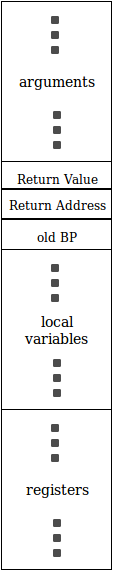

Introduction
During run-time, when an ExpL function is invoked, space has to be allocated for storing
- the arguments to the function,
- return value of the function,
- local variables declared in the function.
Each activation record has a base, and the base pointer (BP) is a machine register that points to the base of the activation record of the currently executing function. When one function invokes another, the base pointer value of the caller is pushed on to the stack and BP is set to point to the new activation record base. Upon return, the activation record is popped off the stack and old value of base pointer is restored. The stack pointer (SP) must always point to the top of the stack.
The calling convension fixes in what order arguments to a function must be pushed by the caller to the called function, the place in the activation record where the return value is expected to be written by the callee etc. The structure of the activation record explained below will clarify the calling convension.
When a function is invoked, a part of the activation record is set up by the caller and the rest is set up after invocation of the function. Similarly, when a function returns, the callee and the caller are responsible for removing the parts they have set up.
The following sequence of actions occur when a function A calls another function B.
- A pushes its machine state (registers in use) into the stack so that the registers are free for use in B.
- A pushes the arguments to B in the order they appear in the declaration.
- A pushes one empty space in the stack for B to place its return value.
- A invokes B. (This results in generation of a CALL instruction which results in pushing the instruction pointer into the stack and transfer of control to B).
Inside B, the following space allocations take place:
- B saves the BP value of A to the stack and sets BP to the top of the stack.
- B allocates space for local variables (in the order in which they appear in the delcaration).
This completes the activation record for B. If B later calls another function C, then it starts saving its registers, pushes arguments to C and so on.
When B completes execution the following sequence of actions take place:
- B computes the return value and stores it in the space allocated for it in the stack.
- B pops out the local variables.
- The old BP value is popped off and saved into BP.
- B returns (this results in generation of a RET instruction which results in setting the instruction pointer to the value saved in the stack).
On re-entry, A does the following:
- Retrieve the return value from stack and save it to a new register. This is the result of the function call.
- Pop off the arguments.
- Restore the saved register context.